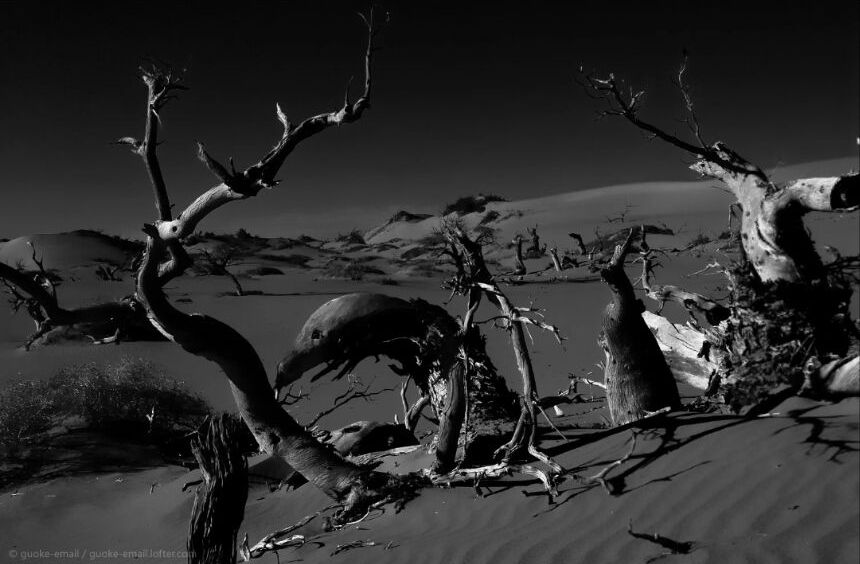
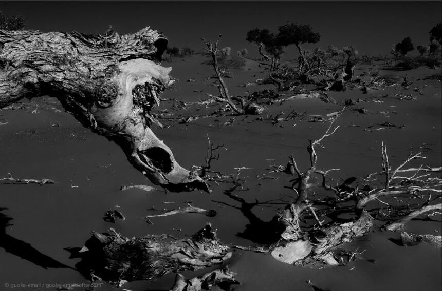
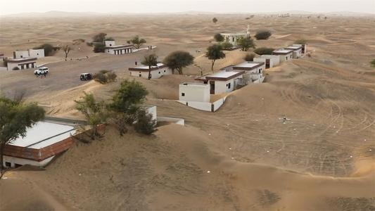
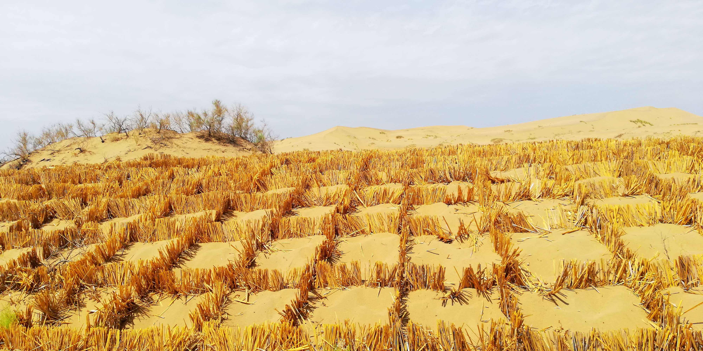
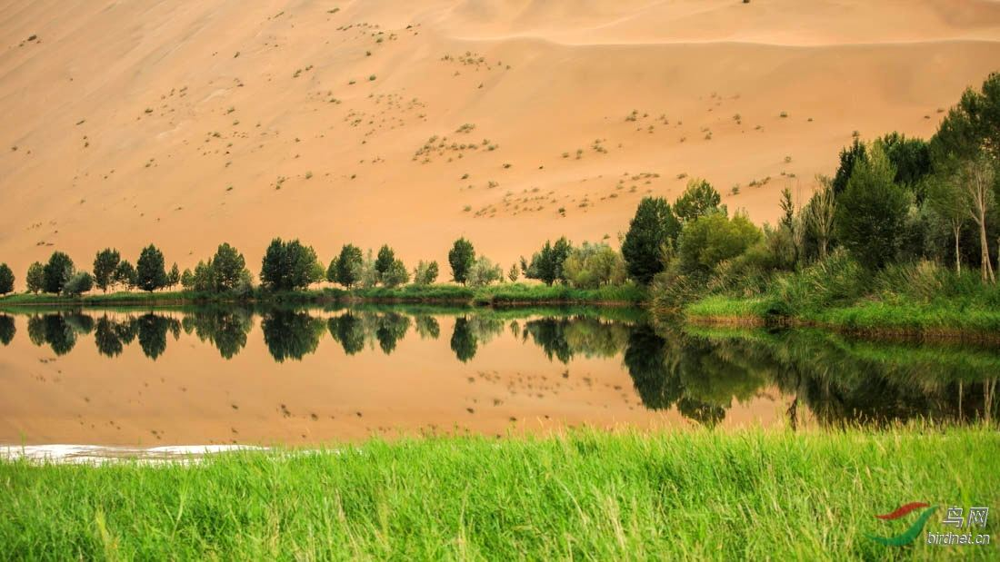
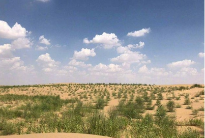
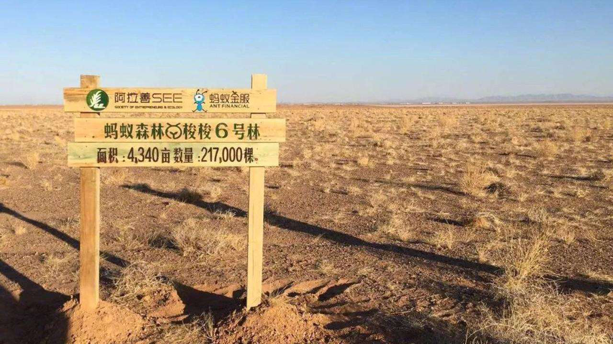

危害
一. 沙漠的危害

自然灾害加剧
（1）自然灾害加剧:沙尘暴、风沙、雾霾,这些自然灾害会无情地扰乱我们的生产生活秩序,甚至危害人们的健康。（2）威胁交通安全:流动的沙丘会埋没公路、铁路;沙尘暴会降低大气能见度,迫使机场、公路停运。

可利用土地资源减少
(1)可利用土地资源减少20世纪50年代以来,中国已有67万公顷耕地、235万公顷草地和639万公顷林地变成了沙地。(2)土地生产力严重衰退 中国荒漠化土地中,以大风造成的风蚀荒漠化面积最大,占了160.7万平方公里。
(3)自然灾害加剧 如沙尘暴增多;导致水土流失、草场退化

加深了贫困程度
它恶化生态环境,破坏生存条件,加剧自然灾害发生,制约经济发展,加深了贫困程度,严重影响社会稳定, 给我国国民经济和社会发展造成了极大的危害据测算，我国每年因土地沙漠化造成的直接经济损失达540亿元， 相当于西北五省（区）年财政收入的3倍x。二. 沙漠的防治措施

1.沙障防治
（主要有草方格沙障、黏土沙障、篱笆沙障、立式沙障、平铺沙障等。草方格沙障使用麦草、稻草、芦苇等材料，在流动沙丘上扎成挡风墙，以削弱风力的侵蚀，同时有截留降雨的作用，能提高沙层的含水量，有利于沙生植物的生长。黏土沙障是将黏土在沙丘上堆成高20~30 m的土埂，间距1~2 m，走向与风向垂直，黏土固沙施工简单，固沙效果较好，且具有良好的保水能力，但需要大量的黏土。

2.植物治理
沙漠植物治理指在沙漠地区播种沙生植物，以阻止沙漠扩张及改善沙漠土地。沙生植物具有水分蒸腾少，机械组织、 输导组织发达等特点，可抵抗狂风袭击，并尽快将水分和养料输送到亟需的器官，其细胞内经常保持较高的渗透压， 具有很强的持续吸水能力，使植物不易失水，能够适应干旱少雨的环境。3.水资源利用
水资源利用在沙漠治理过程中最为重要，沙漠中的水源主要有地下水、河道水和降水，但沙漠区域的降水量不稳定， 一般随气候的变化而变化，湿润年份降水量多，而干暖年份降水量少，沙漠地下水较稳定，其沙层厚，具有一定的隔热性， 使水得以在地下保存，但这种稳定是相对的，受到降水的制约。解决水资源主要从汲水、输水和节水灌溉等方面考虑。三.贡献于沙漠防治的他们

1.国家林业局
国家林业局防治荒漠化管理中心防治荒漠化管理中心（国家林业局防沙治沙办公室）为国家林业局具有行政管理职能的事业单位。
